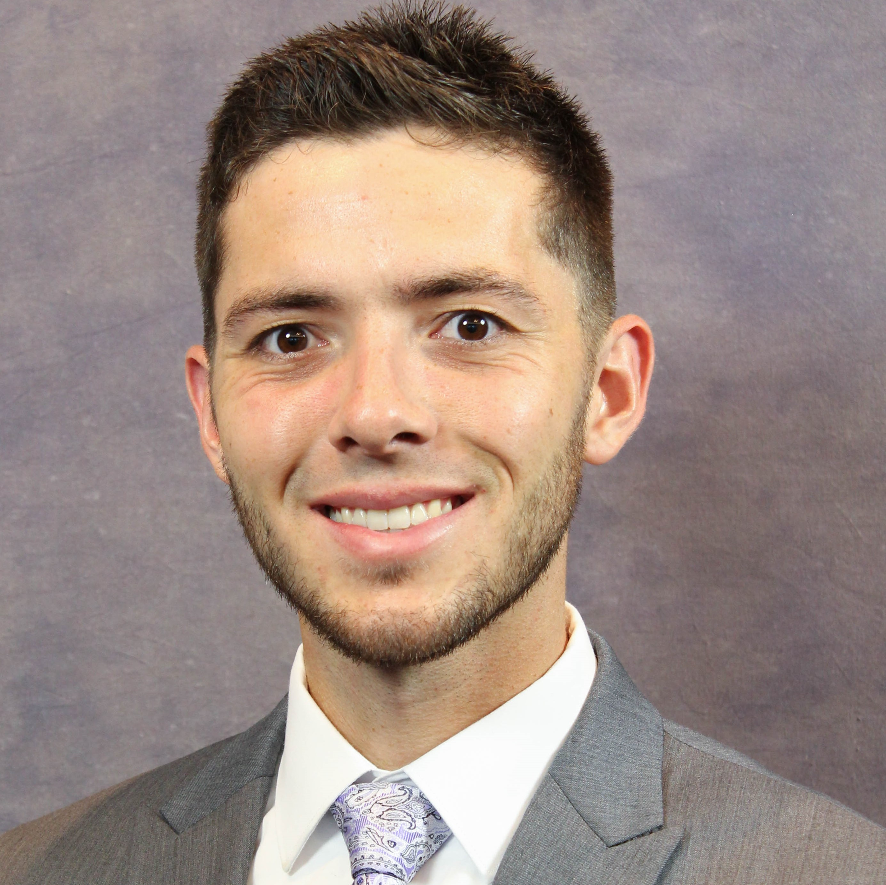

Hello, and welcome to my personal page! My name is Danny and I am a senior at Kansas State University graduating this May with my Computer Engineering Degree. I grew up in the Overland Park/Olathe area outside of Kansas City, where I lived with my Mom and pet Miniature Schnauzer, Woody. After graduating from Blue Valley West High School in 2014, I followed in the path of much of my family and became a Wildcat. Always a fan of Jazz, BBQ, and everything else Kansas City, I'm looking forward to returning to work at Garmin International as a Software Engineer after graduation!
Daniel J. Lovell
Engineer, Musician, Outdoorsman

Since purchasing my first smartphone, the original Galaxy S, in 2010 and becoming a de facto Android enthusiast, I was destined to graviate towards the tech industry, whether I knew it at the time or not. At K-State, the core programming courses quickly became my favorite, despite the electrical/embedded hardware focus of my degree. My dream was to work at a large technology company, developing software at the system or application level for consumer electronics, such as smartphones or IOT devices. When I was hired at Garmin as an intern in 2017, I started developing for Avionics Displays as part of a User Interface team. Both Aviation and strict C development were largely unfamilar to me, but have been both fascinating and enjoyable to learn about. With plans to continue my role full time, I've used design classes and my remaining electives to reaquaint myself with Java development, and diversify in areas such as web development and microcomputer system design.
Outside of my classes and engineering work, I am heavily involved in both the College of Engineering and the Music Department. I have enjoyed serving as an Engineering Ambassador, representing STEM, K-State, and our programs and facilities with future students on campus and at state-wide events, and am also active in K-State's chapter of Tau Beta Pi Engineering Honor Society. I just finished up my 4th and final season with the Pride of Wildcat Land Marching Band, and still play trombone in the Concert Jazz Ensemble. As a former Boy Scout, when I have opportunites to travel, I enjoy skiing, hiking, and camping, particularly in Colorado or Utah. At home, hiking the scenic Konza Prairie is one of my favorite activities!